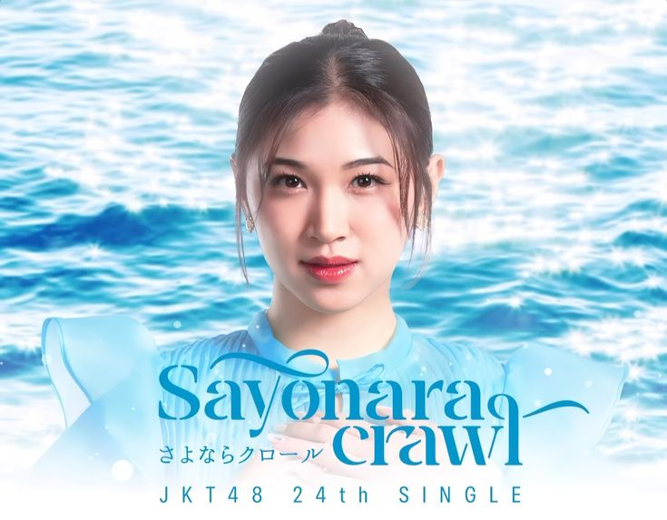

Our Porto >_<
Berikut adalah beberapa proyek yang telah saya kerjakan dalam bidang desain dan pengembangan.

Game Flappy Bird
Proyek akhir DDP berupa game Flappy Bird sederhana menggunakan Python dan Pygame. Dirancang agar seru dimainkan dan mudah dipahami untuk pemula.
Game Peri Lucu
Game petualangan dengan karakter peri lucu yang dibuat menggunakan Java dan konsep OOP. Mengajarkan logika pemrograman sambil bermain dengan visual yang menarik.
Sistem Pemesanan Tiket
Aplikasi sederhana untuk memesan tiket yang menerapkan struktur data seperti Queue dan LinkedList. Cocok untuk belajar implementasi data struktur dalam kasus nyata.

Project Monitoring Kandang Ayam
Proyek IoT menggunakan ESP32 dan sensor DHT22 untuk memantau suhu dan kelembapan kandang ayam secara real-time melalui aplikasi Blynk. Menampilkan notifikasi dan indikator otomatis.

Project Klasifikasi Penyakit Jantung
Proyek AI yang memanfaatkan algoritma K-Nearest Neighbors (KNN) untuk mengklasifikasikan risiko penyakit jantung berdasarkan data pasien. Visualisasi data dan akurasi model disajikan dalam video.

Project Cabling & Koneksi Device
Demonstrasi praktik pengkabelan UTP menggunakan metode straight-through serta konfigurasi koneksi antara dua perangkat. Proyek ini merupakan tugas praktikum jaringan komputer.